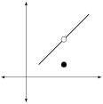

Reading graphs dynamically will be an essential part of understanding the key concepts of calculus, and applying those concepts to your daily life.
To read any graph dynamically, start at a specific \(x\) value, and imagine "standing" on the function above that point on the x-axis. The \(y\) value corresponds with your height above the x-axis.
Next, imagine walking right (increasing \(x\)) and left (decreasing \(x\)) along the curve. As you walk, the curve forces your height to move up or down.
Instructions.
Use the slider to move yourself left and right along the curve. The dot represents your position on the surface, with
\begin{equation*}
\begin{cases}
x = \text{ your position }\\
y = \text{ your height } = f(x)
\end{cases}
\end{equation*}
To see what happens as you approach \(x=1\) from the left,
Move the \(x\) value to some number less than \(1\text{.}\) For simplicity, start by moving to \(x=0\text{.}\) At that point on the curve, your height will be \(y=0\text{.}\)
Drag the slider to increase \(x\) towards 1, making sure never to allow \(x\) to equal 1.
As you increased \(x\) (as you move it right), you will have seen the height increase as well. Even more, you will have seen the height getting closer and closer to \(y=2\text{.}\)
Because of this, we say that your height \(y=f(x)\) gets closer and closer to \(y=2\) as \(x\) approaches 1 from the left.
Important: The fact that \(f(1)=3\) is unrelated to our question, because that tells us what happens at that point, not what happens during the process of approaching that point.
To see what happens as you approach \(x=1\) from the right,
Move the slider so that \(x\) is significantly bigger than \(2\text{.}\) For simplicity, start by moving to \(x=2\text{.}\) At that point on the curve, your height will be \(y=2.5\text{.}\)
Drag the slider to decrease\(x\) toward 1, making sure never to allow \(x\) to equal 1. As you do this, the height decreases, getting closer and closer to \(2\text{.}\)
Because of this, we say that the height \(y=f(x)\) gets closer and closer to \(y=2\) as \(x\) approaches 1 from the right.
As you approach \(x=3\) from the left, your height increases to \(y=3\text{.}\)
As you approach \(x=3\) from the right, your height decreases to \(y=1\text{.}\)
To answer these questions clearly and concisely, we need new mathematical language. To understand our notation, it will be helpful to remember the number line. If you (\(x\)) approach a number \(a\) from the left, you are approaching \(a\) from the side of the number line with all the negative numbers. Because of that, we write \(x\rightarrow a^-\) as a shorthand for approaches \(a\) from the left. If you (\(x\)) approach a number \(a\) from the right, you are approaching \(a\) from the side of the number line with all the positive numbers. Because of that, we write \(x\rightarrow a^+\) as a shorthand for approaches \(a\) from the right.
Definition7.3.
Suppose that \(f(x)\) is some function, and that \(a\) and \(L\) are two numbers.
Left
Suppose that is \(x\) approaching \(a\) from the left (that \(x\rightarrow a^-\)). If the heights \(f(x)\) get closer and closer to a number \(L\text{,}\) then we say that the the left hand limit exists, and write
\begin{equation*}
\lim_{x\rightarrow a^-} f(x) = L
\end{equation*}
We can read this expression by saying "(1) the limit (2) as \(x\) approaches \(a\) from the left is (3) equal to "L".
Right
Suppose that is \(x\) approaching \(a\) from the right (that \(x\rightarrow a^+\)). If the heights \(f(x)\) get closer and closer to a number \(L\text{,}\) then we say that the the right hand limit exists, and write
\begin{equation*}
\lim_{x\rightarrow a^+} f(x) = L
\end{equation*}
We can read this expression by saying "(1) the limit (2) as \(x\) approaches \(a\) from the right is (3) equal to "L".
Undirected
Sometimes, we talk about limits without any direction.
We say that the (undirected) limit of \(f(x)\) as \(x\) approaches \(a\) is equal to \(L\text{,}\) written
\begin{equation*}
\lim_{x\rightarrow a} f(x) = L
\end{equation*}
if as the input \(x\) gets closer to \(a\), the output \(f(x)\) gets closer to \(L\).
Exploration7.1.
Let \(f(x)\) be the function defined by the graph in Figure 7.1. Compute the following limits.
(a)
\(\displaystyle \lim_{x\rightarrow 1^-} f(x)\)
Answer.
Following the reasoning from Example 7.2, we see that \(\displaystyle \lim_{x\rightarrow 1^-} f(x)=2\)
(b)
\(\displaystyle \lim_{x\rightarrow 1^+} f(x)\)
Answer.
Following the reasoning from Example 7.2, we see that \(\lim_{x\rightarrow 1^+} f(x)=2\)
(c)
\(\displaystyle \lim_{x\rightarrow 1} f(x)\)
Answer.
We have seen that as \(x\) approaches 1, the height goes to 2 regardless of the direction. That tells us that the undirected limit exists and equals 2. In other words, \(\lim_{x\rightarrow 1} f(x)=2\)
(d)
\(\displaystyle \lim_{x\rightarrow 3^-} f(x)\)
Answer.
Following the reasoning from Example 7.2, we see that \(\lim_{x\rightarrow 3^-} f(x)=3\)
(e)
\(\displaystyle \lim_{x\rightarrow 3^+} f(x)\)
Answer.
Following the reasoning from Example 7.2, we see that \(\lim_{x\rightarrow 3^+} f(x)=1\)
(f)
\(\displaystyle \lim_{x\rightarrow 3} f(x)\)
Answer.
We have seen that as \(x\) approaches 3, the height goes to different values depending on your direction of approach. That tells us that the undirected limit does not exist. In other words, \(\lim_{x\rightarrow 3} f(x)= DNE\)
In the graph above, we have already seen that as we move the input (slider) \(x\) closer to \(1\text{,}\) that the height (output) gets closer to \(2\text{.}\) In our new lanugage, that says
In this class, we only need an informal understanding of limits, and the definitions above should be more than enough.
But there is still a little bit of ambiguity in expressions like "getting closer and closer to." It is natural to ask, how close is close enough? The answer to that question gives us the full, mathematical definition of a limit.
That definition says that \(\lim_{x\rightarrow a}f(x) = L\) if and only if for any acceptable error \(\varepsilon>0\text{,}\) there is an acceptable distance \(d>0\) such that the difference between the actual height \(f(x)\) and the limit height of \(L\) is less than \(\varepsilon\) whenever the input \(x\) is no more than distance \(d\) from the point \(a\) that you are approaching.
Again, unless you find it helpful we don’t need that more formal definition for this class. The main point is that it is possible to eliminate any ambiguity about what "close enough" really means.
The function in Figure Figure 7.1 is very unusual. Most mathematical functions can be drawn smoothly, with one or two strokes of a pen. But this function includes lots of jumping around, and we need to lift the pen every time there is a "jump". We can make this precise using the following definition.
Definition7.5.
We say that a function \(f(x)\) is continuous on its domain if you can draw the graph of the function without lifting your pen.
which means that both the left and right limits exist, and equal the value that \(f\) achieves at \(a\text{.}\)
The two definitions are really two ways of saying the same thing. If your function can be drawn without lifting your pen, then each point flows smoothly into the next point, and the limit \(\lim_{x\rightarrow a} f(x) \) exists and equals \(f(a)\)
On the other hand, if the function can’t be drawn without lifting your pen, then there must be some point in drawing the curve where the function does not smoothly flow into the next point. In that case, the limit \(\lim_{x\rightarrow a}f(x)\) either does not exist, or it does not equal \(f(a)\text{.}\)
Example7.6.Three reasons a function might not be continuous..
Removable Discontinuity

Imagine running along this graph. The discontinuity is a hole in the ground, like an open manhole cover. If you were to walk over that hole, you would fall down the hole, and hit the ground at the bottom. But it seems like someone should be able to remove this discontinuity by covering up the manhole cover (by redefining the function at that specific point).
We say that any function has a removable discontinuity if the left and right limits both exist, and both equal the same number, but if that number is not equal to \(f(a)\text{.}\)
Jump Discontinuity
In this graph, the limit does not exist. If you imagine running along this curve, you would need to jump to get from one side of the discontinuity to the other.
We say that any function has a jump discontinuity if the left and right limits equal two different finite numbers.
Infinite Discontinuity
In this graph, the left and right limits both go off to infinity, and the graph of the function has a vertical asymptote. If you imagine running along this curve, you would need to be able to go to infinity in the process of getting from one side to the other.
We say that any function has an infinite discontinuity if either the left or right limit goes to infinity.
Section7.2Macroeconomics and Mostly Continuous Functions
There is an important difference between histograms and scatter plots on the one hand, and continuous functions on the other. In a discrete graph, you would need to "jump" to move between the discrete points. But as you add more and more points, the distance you would need to "jump" gets smaller and smaller. If you add enough discrete points, the graph becomes indistinguishable from a continuous curve, where you can walk smoothly along the curve.
, “Macroeconomics is the branch of economics that deals with the structure, performance, behavior, and decision-making of the whole, or aggregate, economy”.
There are a lot of data points in the overall economy, so many macroeconomic functions are essentially continuous. However, certain unique events can introduce jumps.
As a very simplified example, any given oil rig will be able to produce different amounts of oil, based on how many people are working on it, how much electricity is used for the pump, and other factors. These factors can generally be scaled smoothly, so the cost of producing oil should be roughly continuous as a function of the number of barrels to be produced.
But there are also limits to the amount of oil that a certain rig will be able to extract. To produce more than that amount of oil, an entirely new oil rig will need to be set up, causing a massive jump in the cost. Furthermore, additional refinement will probably be needed after the new rig is produced, possibly resulting in another jump in cost.
Exploration7.2.
Suppose that the following graph shows the cost \(C\) in millions of dollars of producing \(x\) million barells of oil at a specific oil field. Use this graph to answer the following questions.
(a)
Compute \(\lim_{x\rightarrow 10^-}C(x).\) What does this tell us about oil production?
Solution.
As the number of (millions of) gallons of oil increases to 10 from the left, the cost increases to $100 (million) dollars. Therefore, \(\lim_{x\rightarrow 10^-}C(x)= 100.\)
(b)
Compute \(\lim_{x\rightarrow 10^+}C(x).\) What does this tell us about oil production?
Solution.
As the number of (millions of) gallons of oil decreases to 10 from the right, the cost decreases to $150 (million) dollars. Therefore, \(\lim_{x\rightarrow 10^+}C(x)= 150.\)
(c)
Compute \(C(10).\) What does this tell us about oil production?
Solution.
To produce exactly 10 (millon) barrels, the cost will be exactly $125 (million) dollars. Therefore, \(C(10)= 125.\)
To define functions with jumps, we often use piecewise functions. The graph in Exploration 7.2 is made up of the following three functions:
When \(x\lt 10\text{,}\) graph the line \(50 + 5x\)
When \(x = 10\text{,}\) graph the point \(50 + 5x\)
When \(x\gt 10\text{,}\) graph the line \(90 + 6x\)
Mathematically, this is often abbreviated as
\begin{equation*}
\begin{cases}
50 + 5x & \text{ if } x\lt 10 \\
125 & \text{ if } x = 10 \\
90 + 6x & \text{ if } x\gt 10 \\
\end{cases}
\end{equation*}
Section7.3Computing Limits Numerically
You can also compute limits numerically. The process is straighforward, once you understand what the question is asking. For example, suppose that
\begin{equation*}
f(x) =
\begin{cases}
1 + x & \text{ if } x \lt 2 \\
1 & \text{ if } x = 2 \\
-1+0.5x & \text{ if } x \gt 2 \\
\end{cases}
\end{equation*}
You are asked to compute \(\displaystyle \lim_{x\rightarrow 2^+} f(x)\)
Remember this means you want to see what happens to your height when your \(x\) value approaches \(a=2\) from the right.
Think about some \(x\) values you would pass through when approaching \(2\) from the right. For example, you would pass through \(x=3,\ x=2.5,\ x=2.1,\ x=2.01\) and so on.
Compute the height at each of the \(x\) values we listed above.
\(x\)
\(f(x)\)
\(3\)
\(f(3) = -1 + 0.5(3) = 0.5 \)
\(2.5\)
\(f(2.5) = -1 + 0.5(2.5) = 0.25 \)
\(2.1\)
\(f(2.1) = -1 + 0.5(2.1) = 0.05 \)
\(2.01\)
\(f(2.01) = -1 + 0.5(2.01) = 0.005 \)
Think about what is happening to your height as your \(x\) value is approaching 2 from the right.
Notice that the \(y\)-value is getting closer and closer to 0. In other words,
To get more comfortable with what this means, the graph of the piecewise function \(f(x) =
\begin{cases}
1 + x & \text{ if } x \lt 2 \\
1 & \text{ if } x = 2 \\
-1+0.5x & \text{ if } x \gt 2 \\
\end{cases}\) is given below. As you change the value of \(x\text{,}\) the left side of the screen displays
The current value of \(x\text{.}\)
Whether \(x\) is greater, equal, or less than \(2\text{.}\) This is used to decide which of the three equations to use when computing \(f(x)\text{.}\)
The result of plugging the current value of \(x\) into the equation for \(f(x)\text{,}\) which gives the current \(y\) value.
We can use the equation
Exploration7.3.
Suppose that the cost of producing \(x\) barrels of oil is given by
\begin{equation*}
C(x) =
\begin{cases}
50 + 5x & \text{ if } x\lt 10 \\
125 & \text{ if } x = 10 \\
90 + 6x & \text{ if } x\gt 10 \\
\end{cases}
\end{equation*}
Think about some \(x\) values you would pass through when approaching \(10\) from the right. For example, you would pass through \(x=11,\ x=10.5,\ x=10.1,\ x=10.01\) and so on. Compute the height at each of the \(x\) values we listed above.
\(x\)
\(C(x)\)
\(11\)
\(C(11) = 90 + 6(11) = 156 \)
\(10.5\)
\(C(10.5) = 90 + 6(10.5) = 153 \)
\(10.1\)
\(C(10.1) = 90 + 6(10.1) =150.6 \)
\(10.01\)
\(C(10.01) = 90 + 6(10.01) =150.06 \)
As you move from the top row of the table to the bottom row of the table, the \(x\) values get closer and closer to \(a=10\text{,}\) always from the right.
And as these \(x\) values approach 10, we see that the heights \(C(x)\) get closer and closer to 150. That means
Think about some \(x\) values you would pass through when approaching \(10\) from the left. For example, you would pass through \(x=9,\ x=9.5,\ x=9.9,\ x=9.99\) and so on. Compute the height at each of the \(x\) values we listed above.
\(x\)
\(C(x)\)
\(9\)
\(C(9) = 90 + 6(11) = 95 \)
\(9.5\)
\(C(9.5) = 90 + 6(10.5) = 97.5 \)
\(9.9\)
\(C(9.9) = 90 + 6(10.1) =99.5 \)
\(9.99\)
\(C(9.99) = 90 + 6(10.01) = 99.95\)
As you move from the top row of the table to the bottom row of the table, the \(x\) values get closer and closer to \(a=10\text{,}\) always from the left.
And as these \(x\) values approach 10, we see that the heights \(C(x)\) get closer and closer to 100. That means
It follows that the function is not continuous at \(a=10\text{.}\)
Because the directed limits exist and equal finite numbers, this is a jump discontinuity.
Checkpoint7.7.
Let \(A(x) = \dfrac{10+4x}{x}\text{.}\) Find \(\displaystyle\lim_{x\rightarrow 0^+} A(x)\text{.}\)
Solution.
Think about some \(x\) values you would pass through when approaching \(0\) from the right. For example, you would pass through \(x=1,\ x=0.5,\ x=0.1,\ x=0.01\) and so on. Compute the height at each of the \(x\) values we listed above.
As you move from the top row of the table to the bottom row of the table, the \(x\) values get closer and closer to \(a=0\text{,}\) always from the right.
And as these \(x\) values approach 0, we see that the heights \(f(x)\) are getting bigger and bigger, without bound. That means